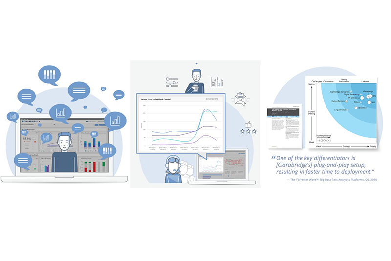

Voice of the Customer
Clarabridge Data Integration - API
What is Voice of The Customer (VoC)?
Voice of the Customer (VoC) is a term that describes your customer’s feedback about their experiences with and expectations for your products or services. It focuses on customer needs, expectations, understandings, and product improvement.
VoC programs have gained traction over the years and are fast-growing segments of a core business strategy for organizations. They work exceptionally well for brands as customers demand more direct engagement with a firm and because capturing and acting on customer feedback is critical to understanding a prospect’s complex decision-making process.
What were my responsibilities?
* Builds the entire solution for integrating structured and unstructured data.
* Managed technical project activities between employees and suppliers.
* Provided several consultative inputs to stakeholders.
* I was advisor in several technical and strategic decisions.
* Builds integrators and automatic data transfer routines.

What were my responsibilities?
And what were my activities with Clarabridge?
Clarabrige is a first class supplier, and produces a number of analytics and analytical tools that support a successful VoC.
My main activities orbited the universe of data and integration. A large amount of data comes from unstructured sources, such as audio and video. My main responsibility was to integrate these sources correctly and resilient manner.
Coordinated this project activities, several suppliers involved and different sources of data combined.
 Published: 8 MAY 2020
Published: 8 MAY 2020